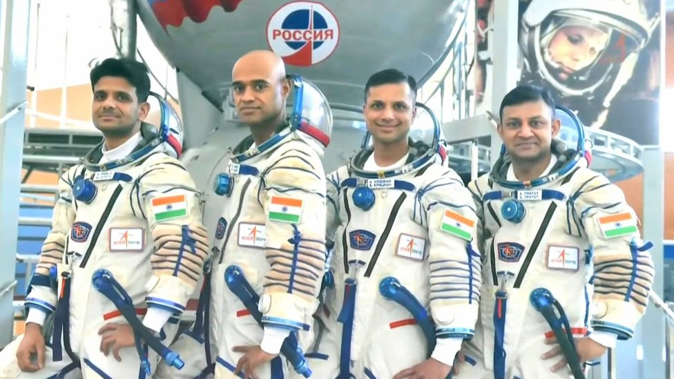
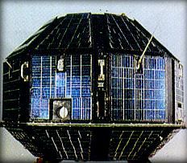
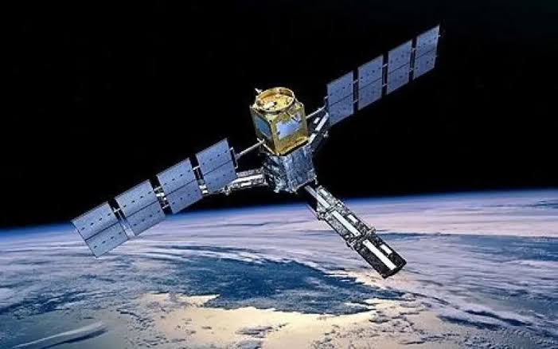

Astronauts of Gaganyaan
- Group Captain Prashant Balakrishnan Nair- He was born on August 26, 1976 He was born in Palakkad , In kerala.
- captain Ajit Krishnan - He was born on April 19 , 1982 in Chennai, Tamil Nadu.
- Group Captain Angad Pratap - He was born on July 17, 1982 in Prayagraj, Uttar Pradesh.
- Wing Commander Shubhanshu Shukla - He was born on October 10 , 1985 in Lucknow Uttar Pradesh.
- Monitor earthquakes and volcanoes.
- Track landslides.
- Measure glaciers and ice - sheet movement.
- Study forests and agriculture.
- Monitor floods and natural disasters.
- Detect changes in earth over time.
- Search for and analyze water water-ice.
- Study the moon's soil (regolith).
- Investigate the lunar environment.
- Help prepare for future human base on moon.
- United States
- Russia
- Japan
- Canada
- Belgium
- Denmark
- France
- Germany
- Italy
- Netherlands
- Norway
- Spain
- Sweden
- Switzerland
- United Kingdom
- United States
- Russia
- Europe
- Japan
- Canada
- Expand telephone service accross India.
- Broadcast Doordarshan television nationwide.
- Improve weather forcasting accross India.
- Provide cyclone and disaster warnings.
- Support education and rural development programs.
- INSAT-1B was launched on August 30,1983, and its launch vehicle was "Space Shuttle Challenger (STS-8)" with PAM-D upper stage.
- INSAT-1C was launched on July 21, 1983, and its launch vehicle was Ariane 3 .
- INSAT-1D was launched on June 12, 1990 and, its launch vehicle was Delta 4952. It masses around 1,190 Kg . There were only 4 series of INSAT-1 Series and among all of these the iNSAT-1A was failed after 5 months of working in the orbit of earth.
- IRS-1A was launched on march 17, 1988 and its launch site was Baikonur Cosmodrome (Site 31), Kazakhstan. It was India's first operational remote sensing satelite, launched into a Sun-synchronous polar orbit which carried LISS sensor for Earth imaging.
- IRS-1B was launched on August, 1991 and its launch site was also Baikonur Cosmodrome (Site 31), Kazakhstan. It improved the versions of IRS-1A which provided better orientation and imaging capabilities and provided regular data for agriculture and resources mapping. IRS-1C was launched on December 28, 1995. It was also launched from Baikonur cosmodrome (Site 31), Kazakhstan. It was second generation IRS satelite which included higher-resolutions cameras and operated for more than 11 years.
- IRS-1D was launched on September 29, 1997. and its launch site was Satish Dhawan Space Center (SDSC) India. It further improved imaging capabilities and supported and environmental studies.
- Resourcesat
- Cartosat
- Oceansat
- RISAT
- HySIS
- EOS You will learn about all of these as you will scroll to this web site.

Chandrayaan 4 ?
The chandrayaan 4 is expected to launch nearly during 2028 or above,ISRO signed a treaty from Japanese space agency JAXA (Japan Aerospace Exploration Agency) that they will create and launch this Chandrayaan 4 as a partner and will share all the information . Yet this is not exactly confirmed by ISRO and JAXA that they will launch Chandrayaan 4 nearly in 2028 but both agency estimated this year for that mission.NISAR mission as a future plan
It is a joint mission between Indian Space Research Organisation (ISRO) and National Aeronautics And Space Administration (NASA). The NISAR stands for NASA–ISRO Synthetic Aperture Radar and its mission is to observe the Earth and help scientist toVenus Orbiter Mission (VOM)
The Venus Orbiter Mission (VOM) is also known as Shukrayaan-1 which is taken from Hindi language, in hindi Venus is called Shukra and yaan means carier which together forming Shukrayaan-1. Shukrayaan-1 will be India's first venus orbitter mission, it is approved by Indian Govt. and is still under development. This mission will study venus's thick atmosphere and clouds, Create - high resolution maps for the surface, investigate the planets ionosphere and interaction with the sun, search for clues of volcanic activity and geological history. It will launch nearly around March,2028 and its launch vehicle will be LVM3 and its destination is venus orbit and working life spam of this mission is calculated above 3-4 years.Lunar Polar Exploration Mission
The Lunar Polar Exploration Mission (LUPEX) is a joint mission by Indian Space Research Organisation (ISRO, India) And Japan Aerospace Exploration Agency (JAXA, Japan) . LUPEX will explore South Polar region of the moon , where scientist beleive large amounts water ice may exist in permanently shadowed craters. This mission aims toBharatiya Antariksh Station (BAS)
The Bharatiya Antariksh Station (BAS) will be India's first space station , just like International Space Station built and launched by 15 Countries under partnershift of 15 countries and that are-Aryabhata Satelite
It is very important to know little bit about India's first satelite Aryabhata. This satelite is named after the great mathematician of Ancient India, his name is given to a satelite because he is not only a mathematician he is also a astronomer. He calculated almost exactly the time of a year in last lefted hours, minutes, seconds . His calculation is insane. That is why his name is given to a satelite. This satelite was launched with the help of NASA and is caried to launch site through a cycle. It was launched on April 19, 1975 , its launch site was not in India, it was launched from Kapustin Yar (Soviet Union). Its launch vehicle was Soviet kosmos-3M Rocket. Its weight was 360 kg. This satelite was built by ISRO by trusting on our own technology.
APPLE Satelite
APPLE stands for Ariane Passenger Payload Experiment, It was India's first communicational satelite. It was launch on June 19, 1981 , and its rocket was Ariane 1 , it was launched from Guiana Space Center. The main mission of this satelite was to check the technology of communication from space to earth, which was the first step towards the Gaganyaan mission (the dream of gaganyaan mission was seen by Satish Dhawan) . It helped later ISRO develop technologies used in the INSAT and GSAT satelite series. It marked India's entry into advanced space communication race in those days.Indian Astronauts Moon Landing Mission
Indian Space Research Organisation has announced the goal of landing an Indian astronaut on the Moon by 2040, but the specific mission name has not been revealed yet. It's vary exciting to think about Indian Astronauts on moon. But it is not officialy announced by ISRO but announced by Indian Govt: . there is only few chances of this mission till the year 2040.INSAT-1A
The full form of INSAT is Indian National Satelite where I stands for Indian, N stands for National, and SAT stands for Satelite. The INSAT-1 was India's first multipurpose geostationary satelite. These satelites provided telecommunications, television broadcasting, weather forcasting, and disaster warning service accross India. The INSAT-1 series laid the foundation of for India's modern space based communication Network. It was launched on April 19, 1982 and its launch vehicle was Delta 3910/PAM-D, launching site was Cape Canaveral, USA, it masses around 1,152 kilograms. The importance of INSAT-1 Series was